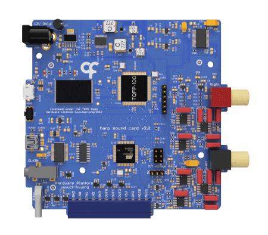
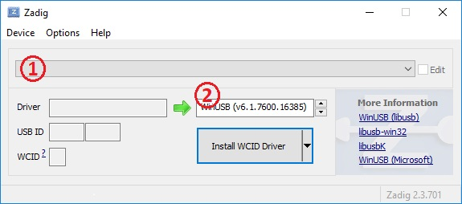

Namespace Harp.SoundCard
Harp Soundcard
This is a high performance sound card with two output channels using 24 bits DACs at 192kHz sample rate.

Hardware Compatibility
| HW Version | Board | Board HW Version | Notes |
|---|---|---|---|
| All | Peripheral.AudioAmp | >= 2.0 |
Firmware Compatibility
| FW Version | Board | Board HW Version | Notes |
|---|---|---|---|
| >= 2.2 | Device.SoundCard | >= 1.0 | Bpod serial communication not supported |
| <= 2.2 | Device.SoundCard | >= 1.0 |
Key Features
- Internal memory to store sounds, enabling low-latency sound delivery
- Pre-selected sounds can be triggered using an external TTL
- Internal wave generator allows the user to configure a pure tone without loading a sound file
- Stereo 24 bit @ 192 kHz maximum sampling rate outputs
- THD: -111dB (1 kHz @ 2 V rms)
- Noise Floor: 20 µV rms | -94 dB (20 Hz – 80 kHz)
- SNR: 100 dB | 113 dbA (20 Hz – 80 kHz @ 2 V rms)
Connectivity
- 1x clock sync input (CLKIN) [stereo jack]
- 1x USB (for computer communication) [USB Mini-B]
- 1x micro USB (for sounds loading) [USB Micro-B]
- 1x 12V supply [barrel connector jack]
- 1x reset button [tactile switch]
- 1x output for the left channel [RCA]
- 1x output for the right channel [RCA]
- 3x general purpose digital outputs (3.3V or 5V) (OUT0-OUT2) [screw terminal]
- 3x general purpose digital inputs (5V tolerant) (IN0-IN2) [screw terminal]
- 2x analog inputs (3.3V máx - 5V tolerant) (ADC0-ADC1) [screw terminal]
Interface
The interface with the Harp Soundcard can be done through Bonsai or a dedicated GUI (Graphical User Interface).
Install Graphical User Interface (GUI)
In order to use this GUI, there are some software that needs to be installed:
1 - Install the drivers.
2 - Install the runtime.
3 - Reboot the computer.
4 - Install the GUI.
Install Drivers
To install the proper drivers to interface with the device, follow the next steps in sequence.
1 - Connect both Harp Sound Card's USB ports to the computer.
2 - Launch the previously installed Harp Sound Card GUI.
3 - Click on the button Open Drivers folder and launch the zadig-2.3.exe.
4 - (1) Select the Harp Sound Card from the list. If the device is not available, go to Options -> List All Devices.
5 - (2) Select the WinUSB driver and click Install WCID Driver.

Firmware
Tagging Scheme
| Tag | Description |
|---|---|
| SoundCard-* | Firmware for the sound card's microcontroller (8 bits processor) |
| SoundCard.PIC32-* | Firmware for the sound card's 32 bits processor |
Firmware Update
1 - Install the Harp Converto to CSV.
2 - Open the Harp Convert to CSV application and write bootloader under List box on the Options tab
3 - Select the correspondent COM port and then select the firmware to be loaded for both microcontrollers
Licensing
Each subdirectory will contain a license or, possibly, a set of licenses if it involves both hardware and software.
| SoundCard | |
|---|---|
| whoAmI | 1280 |
| firmwareVersion | 2.2 |
| hardwareTargets | 1.1 |
Registers
| name | address | type | length | access | description | range | interfaceType |
|---|---|---|---|---|---|---|---|
| PlaySoundOrFrequency | 32 | U16 | Write | Starts the sound index (if less than 32) or frequency (if greater or equal than 32) | |||
| Stop | 33 | U8 | Write | Any value will stop the current sound | |||
| AttenuationLeft | 34 | U16 | Write | Configure left channel's attenuation (1 LSB is 0.1dB) | |||
| AttenuationRight | 35 | U16 | Write | Configure right channel's attenuation (1 LSB is 0.1dB) | |||
| AttenuationBoth | 36 | U16 | 2 | Write | Configures both attenuation on right and left channels [Att R] [Att L] | ||
| AttenuationAndPlaySoundOrFreq | 37 | U16 | 3 | Write | Configures attenuation and plays sound index [Att R] [Att L] [Index] | ||
| InputState | 40 | U8 | Event | State of the digital inputs | DigitalInputs | ||
| ConfigureDI0 | 41 | U8 | Write | Configuration of the digital input 0 (DI0) | DigitalInputConfiguration | ||
| ConfigureDI1 | 42 | U8 | Write | Configuration of the digital input 1 (DI1) | DigitalInputConfiguration | ||
| ConfigureDI2 | 43 | U8 | Write | Configuration of the digital input 2 (DI2) | DigitalInputConfiguration | ||
| SoundIndexDI0 | 44 | U8 | Write | Specifies the sound index to be played when triggering DI0 | |||
| SoundIndexDI1 | 45 | U8 | Write | Specifies the sound index to be played when triggering DI1 | |||
| SoundIndexDI2 | 46 | U8 | Write | Specifies the sound index to be played when triggering DI2 | |||
| FrequencyDI0 | 47 | U16 | Write | Specifies the sound frequency to be played when triggering DI0 | |||
| FrequencyDI1 | 48 | U16 | Write | Specifies the sound frequency to be played when triggering DI1 | |||
| FrequencyDI2 | 49 | U16 | Write | Specifies the sound frequency to be played when triggering DI2 | |||
| AttenuationLeftDI0 | 50 | U16 | Write | Left channel's attenuation (1 LSB is 0.5dB) when triggering DI0 | |||
| AttenuationLeftDI1 | 51 | U16 | Write | Left channel's attenuation (1 LSB is 0.5dB) when triggering DI1 | |||
| AttenuationLeftDI2 | 52 | U16 | Write | Left channel's attenuation (1 LSB is 0.5dB) when triggering DI2 | |||
| AttenuationRightDI0 | 53 | U16 | Write | Right channel's attenuation (1 LSB is 0.5dB) when triggering DI0 | |||
| AttenuationRightDI1 | 54 | U16 | Write | Right channel's attenuation (1 LSB is 0.5dB) when triggering DI1 | |||
| AttenuationRightDI2 | 55 | U16 | Write | Right channel's attenuation (1 LSB is 0.5dB) when triggering DI2 | |||
| AttenuationAndSoundIndexDI0 | 56 | U16 | 3 | Write | Sound index and attenuation to be played when triggering DI0 [Att R] [Att L] [Index] | ||
| AttenuationAndSoundIndexDI1 | 57 | U16 | 3 | Write | Sound index and attenuation to be played when triggering DI1 [Att R] [Att L] [Index] | ||
| AttenuationAndSoundIndexDI2 | 58 | U16 | 3 | Write | Sound index and attenuation to be played when triggering DI2 [Att R] [Att L] [Index] | ||
| AttenuationAndFrequencyDI0 | 59 | U16 | 2 | Write | Sound index and attenuation to be played when triggering DI0 [Att BOTH] [Frequency] | ||
| AttenuationAndFrequencyDI1 | 60 | U16 | 2 | Write | Sound index and attenuation to be played when triggering DI1 [Att BOTH] [Frequency] | ||
| AttenuationAndFrequencyDI2 | 61 | U16 | 2 | Write | Sound index and attenuation to be played when triggering DI2 [Att BOTH] [Frequency] | ||
| ConfigureDO0 | 65 | U8 | Write | Configuration of the digital output 0 (DO0) | DigitalOutputConfiguration | ||
| ConfigureDO1 | 66 | U8 | Write | Configuration of the digital output 1 (DO1) | DigitalOutputConfiguration | ||
| ConfigureDO2 | 67 | U8 | Write | Configuration of the digital output 2 (DO2 | DigitalOutputConfiguration | ||
| PulseDO0 | 68 | U8 | Write | Pulse for the digital output 0 (DO0) | [1:255] | ||
| PulseDO1 | 69 | U8 | Write | Pulse for the digital output 1 (DO1) | [1:255] | ||
| PulseDO2 | 70 | U8 | Write | Pulse for the digital output 2 (DO2) | [1:255] | ||
| OutputSet | 74 | U8 | Write | Set the specified digital output lines | DigitalOutputs | ||
| OutputClear | 75 | U8 | Write | Clear the specified digital output lines | DigitalOutputs | ||
| OutputToggle | 76 | U8 | Write | Toggle the specified digital output lines | DigitalOutputs | ||
| OutputState | 77 | U8 | Write | Write the state of all digital output lines | DigitalOutputs | ||
| ConfigureAdc | 80 | U8 | Write | Configuration of Analog Inputs | AdcConfiguration | ||
| AnalogData | 81 | U16 | 5 | Event | Contains sampled analog input data or dynamic sound parameters controlled by the ADC channels. Values are zero if not used. | AnalogDataPayload | |
| Commands | 82 | U8 | Write | Send commands to PIC32 micro-controller | ControllerCommand | ||
| EnableEvents | 86 | U8 | Write | Specifies the active events in the SoundCard device | SoundCardEvents |
Classes
- AnalogData
Represents a register that contains sampled analog input data or dynamic sound parameters controlled by the ADC channels. Values are zero if not used.
- AsyncDevice
Represents an asynchronous API to configure and interface with SoundCard devices.
- AttenuationAndFrequencyDI0
Represents a register that sound index and attenuation to be played when triggering DI0 [Att BOTH] [Frequency].
- AttenuationAndFrequencyDI1
Represents a register that sound index and attenuation to be played when triggering DI1 [Att BOTH] [Frequency].
- AttenuationAndFrequencyDI2
Represents a register that sound index and attenuation to be played when triggering DI2 [Att BOTH] [Frequency].
- AttenuationAndPlaySoundOrFreq
Represents a register that configures attenuation and plays sound index [Att R] [Att L] [Index].
- AttenuationAndSoundIndexDI0
Represents a register that sound index and attenuation to be played when triggering DI0 [Att R] [Att L] [Index].
- AttenuationAndSoundIndexDI1
Represents a register that sound index and attenuation to be played when triggering DI1 [Att R] [Att L] [Index].
- AttenuationAndSoundIndexDI2
Represents a register that sound index and attenuation to be played when triggering DI2 [Att R] [Att L] [Index].
- AttenuationBoth
Represents a register that configures both attenuation on right and left channels [Att R] [Att L].
- AttenuationLeft
Represents a register that configure left channel's attenuation (1 LSB is 0.1dB).
- AttenuationLeftDI0
Represents a register that left channel's attenuation (1 LSB is 0.5dB) when triggering DI0.
- AttenuationLeftDI1
Represents a register that left channel's attenuation (1 LSB is 0.5dB) when triggering DI1.
- AttenuationLeftDI2
Represents a register that left channel's attenuation (1 LSB is 0.5dB) when triggering DI2.
- AttenuationRight
Represents a register that configure right channel's attenuation (1 LSB is 0.1dB).
- AttenuationRightDI0
Represents a register that right channel's attenuation (1 LSB is 0.5dB) when triggering DI0.
- AttenuationRightDI1
Represents a register that right channel's attenuation (1 LSB is 0.5dB) when triggering DI1.
- AttenuationRightDI2
Represents a register that right channel's attenuation (1 LSB is 0.5dB) when triggering DI2.
- Commands
Represents a register that send commands to PIC32 micro-controller.
- ConfigureAdc
Represents a register that configuration of Analog Inputs.
- ConfigureDI0
Represents a register that configuration of the digital input 0 (DI0).
- ConfigureDI1
Represents a register that configuration of the digital input 1 (DI1).
- ConfigureDI2
Represents a register that configuration of the digital input 2 (DI2).
- ConfigureDO0
Represents a register that configuration of the digital output 0 (DO0).
- ConfigureDO1
Represents a register that configuration of the digital output 1 (DO1).
- ConfigureDO2
Represents a register that configuration of the digital output 2 (DO2.
- CreateAnalogDataPayload
Represents an operator that creates a message payload that contains sampled analog input data or dynamic sound parameters controlled by the ADC channels. Values are zero if not used.
- CreateAttenuationAndFrequencyDI0Payload
Represents an operator that creates a message payload that sound index and attenuation to be played when triggering DI0 [Att BOTH] [Frequency].
- CreateAttenuationAndFrequencyDI1Payload
Represents an operator that creates a message payload that sound index and attenuation to be played when triggering DI1 [Att BOTH] [Frequency].
- CreateAttenuationAndFrequencyDI2Payload
Represents an operator that creates a message payload that sound index and attenuation to be played when triggering DI2 [Att BOTH] [Frequency].
- CreateAttenuationAndPlaySoundOrFreqPayload
Represents an operator that creates a message payload that configures attenuation and plays sound index [Att R] [Att L] [Index].
- CreateAttenuationAndSoundIndexDI0Payload
Represents an operator that creates a message payload that sound index and attenuation to be played when triggering DI0 [Att R] [Att L] [Index].
- CreateAttenuationAndSoundIndexDI1Payload
Represents an operator that creates a message payload that sound index and attenuation to be played when triggering DI1 [Att R] [Att L] [Index].
- CreateAttenuationAndSoundIndexDI2Payload
Represents an operator that creates a message payload that sound index and attenuation to be played when triggering DI2 [Att R] [Att L] [Index].
- CreateAttenuationBothPayload
Represents an operator that creates a message payload that configures both attenuation on right and left channels [Att R] [Att L].
- CreateAttenuationLeftDI0Payload
Represents an operator that creates a message payload that left channel's attenuation (1 LSB is 0.5dB) when triggering DI0.
- CreateAttenuationLeftDI1Payload
Represents an operator that creates a message payload that left channel's attenuation (1 LSB is 0.5dB) when triggering DI1.
- CreateAttenuationLeftDI2Payload
Represents an operator that creates a message payload that left channel's attenuation (1 LSB is 0.5dB) when triggering DI2.
- CreateAttenuationLeftPayload
Represents an operator that creates a message payload that configure left channel's attenuation (1 LSB is 0.1dB).
- CreateAttenuationRightDI0Payload
Represents an operator that creates a message payload that right channel's attenuation (1 LSB is 0.5dB) when triggering DI0.
- CreateAttenuationRightDI1Payload
Represents an operator that creates a message payload that right channel's attenuation (1 LSB is 0.5dB) when triggering DI1.
- CreateAttenuationRightDI2Payload
Represents an operator that creates a message payload that right channel's attenuation (1 LSB is 0.5dB) when triggering DI2.
- CreateAttenuationRightPayload
Represents an operator that creates a message payload that configure right channel's attenuation (1 LSB is 0.1dB).
- CreateCommandsPayload
Represents an operator that creates a message payload that send commands to PIC32 micro-controller.
- CreateConfigureAdcPayload
Represents an operator that creates a message payload that configuration of Analog Inputs.
- CreateConfigureDI0Payload
Represents an operator that creates a message payload that configuration of the digital input 0 (DI0).
- CreateConfigureDI1Payload
Represents an operator that creates a message payload that configuration of the digital input 1 (DI1).
- CreateConfigureDI2Payload
Represents an operator that creates a message payload that configuration of the digital input 2 (DI2).
- CreateConfigureDO0Payload
Represents an operator that creates a message payload that configuration of the digital output 0 (DO0).
- CreateConfigureDO1Payload
Represents an operator that creates a message payload that configuration of the digital output 1 (DO1).
- CreateConfigureDO2Payload
Represents an operator that creates a message payload that configuration of the digital output 2 (DO2.
- CreateEnableEventsPayload
Represents an operator that creates a message payload that specifies the active events in the SoundCard device.
- CreateFrequencyDI0Payload
Represents an operator that creates a message payload that specifies the sound frequency to be played when triggering DI0.
- CreateFrequencyDI1Payload
Represents an operator that creates a message payload that specifies the sound frequency to be played when triggering DI1.
- CreateFrequencyDI2Payload
Represents an operator that creates a message payload that specifies the sound frequency to be played when triggering DI2.
- CreateInputStatePayload
Represents an operator that creates a message payload that state of the digital inputs.
- CreateMessage
Represents an operator which creates standard message payloads for the SoundCard device.
- CreateOutputClearPayload
Represents an operator that creates a message payload that clear the specified digital output lines.
- CreateOutputSetPayload
Represents an operator that creates a message payload that set the specified digital output lines.
- CreateOutputStatePayload
Represents an operator that creates a message payload that write the state of all digital output lines.
- CreateOutputTogglePayload
Represents an operator that creates a message payload that toggle the specified digital output lines.
- CreatePlaySoundOrFrequencyPayload
Represents an operator that creates a message payload that starts the sound index (if less than 32) or frequency (if greater or equal than 32).
- CreatePulseDO0Payload
Represents an operator that creates a message payload that pulse for the digital output 0 (DO0).
- CreatePulseDO1Payload
Represents an operator that creates a message payload that pulse for the digital output 1 (DO1).
- CreatePulseDO2Payload
Represents an operator that creates a message payload that pulse for the digital output 2 (DO2).
- CreateSoundIndexDI0Payload
Represents an operator that creates a message payload that specifies the sound index to be played when triggering DI0.
- CreateSoundIndexDI1Payload
Represents an operator that creates a message payload that specifies the sound index to be played when triggering DI1.
- CreateSoundIndexDI2Payload
Represents an operator that creates a message payload that specifies the sound index to be played when triggering DI2.
- CreateStopPayload
Represents an operator that creates a message payload that any value will stop the current sound.
- CreateTimestampedAnalogDataPayload
Represents an operator that creates a timestamped message payload that contains sampled analog input data or dynamic sound parameters controlled by the ADC channels. Values are zero if not used.
- CreateTimestampedAttenuationAndFrequencyDI0Payload
Represents an operator that creates a timestamped message payload that sound index and attenuation to be played when triggering DI0 [Att BOTH] [Frequency].
- CreateTimestampedAttenuationAndFrequencyDI1Payload
Represents an operator that creates a timestamped message payload that sound index and attenuation to be played when triggering DI1 [Att BOTH] [Frequency].
- CreateTimestampedAttenuationAndFrequencyDI2Payload
Represents an operator that creates a timestamped message payload that sound index and attenuation to be played when triggering DI2 [Att BOTH] [Frequency].
- CreateTimestampedAttenuationAndPlaySoundOrFreqPayload
Represents an operator that creates a timestamped message payload that configures attenuation and plays sound index [Att R] [Att L] [Index].
- CreateTimestampedAttenuationAndSoundIndexDI0Payload
Represents an operator that creates a timestamped message payload that sound index and attenuation to be played when triggering DI0 [Att R] [Att L] [Index].
- CreateTimestampedAttenuationAndSoundIndexDI1Payload
Represents an operator that creates a timestamped message payload that sound index and attenuation to be played when triggering DI1 [Att R] [Att L] [Index].
- CreateTimestampedAttenuationAndSoundIndexDI2Payload
Represents an operator that creates a timestamped message payload that sound index and attenuation to be played when triggering DI2 [Att R] [Att L] [Index].
- CreateTimestampedAttenuationBothPayload
Represents an operator that creates a timestamped message payload that configures both attenuation on right and left channels [Att R] [Att L].
- CreateTimestampedAttenuationLeftDI0Payload
Represents an operator that creates a timestamped message payload that left channel's attenuation (1 LSB is 0.5dB) when triggering DI0.
- CreateTimestampedAttenuationLeftDI1Payload
Represents an operator that creates a timestamped message payload that left channel's attenuation (1 LSB is 0.5dB) when triggering DI1.
- CreateTimestampedAttenuationLeftDI2Payload
Represents an operator that creates a timestamped message payload that left channel's attenuation (1 LSB is 0.5dB) when triggering DI2.
- CreateTimestampedAttenuationLeftPayload
Represents an operator that creates a timestamped message payload that configure left channel's attenuation (1 LSB is 0.1dB).
- CreateTimestampedAttenuationRightDI0Payload
Represents an operator that creates a timestamped message payload that right channel's attenuation (1 LSB is 0.5dB) when triggering DI0.
- CreateTimestampedAttenuationRightDI1Payload
Represents an operator that creates a timestamped message payload that right channel's attenuation (1 LSB is 0.5dB) when triggering DI1.
- CreateTimestampedAttenuationRightDI2Payload
Represents an operator that creates a timestamped message payload that right channel's attenuation (1 LSB is 0.5dB) when triggering DI2.
- CreateTimestampedAttenuationRightPayload
Represents an operator that creates a timestamped message payload that configure right channel's attenuation (1 LSB is 0.1dB).
- CreateTimestampedCommandsPayload
Represents an operator that creates a timestamped message payload that send commands to PIC32 micro-controller.
- CreateTimestampedConfigureAdcPayload
Represents an operator that creates a timestamped message payload that configuration of Analog Inputs.
- CreateTimestampedConfigureDI0Payload
Represents an operator that creates a timestamped message payload that configuration of the digital input 0 (DI0).
- CreateTimestampedConfigureDI1Payload
Represents an operator that creates a timestamped message payload that configuration of the digital input 1 (DI1).
- CreateTimestampedConfigureDI2Payload
Represents an operator that creates a timestamped message payload that configuration of the digital input 2 (DI2).
- CreateTimestampedConfigureDO0Payload
Represents an operator that creates a timestamped message payload that configuration of the digital output 0 (DO0).
- CreateTimestampedConfigureDO1Payload
Represents an operator that creates a timestamped message payload that configuration of the digital output 1 (DO1).
- CreateTimestampedConfigureDO2Payload
Represents an operator that creates a timestamped message payload that configuration of the digital output 2 (DO2.
- CreateTimestampedEnableEventsPayload
Represents an operator that creates a timestamped message payload that specifies the active events in the SoundCard device.
- CreateTimestampedFrequencyDI0Payload
Represents an operator that creates a timestamped message payload that specifies the sound frequency to be played when triggering DI0.
- CreateTimestampedFrequencyDI1Payload
Represents an operator that creates a timestamped message payload that specifies the sound frequency to be played when triggering DI1.
- CreateTimestampedFrequencyDI2Payload
Represents an operator that creates a timestamped message payload that specifies the sound frequency to be played when triggering DI2.
- CreateTimestampedInputStatePayload
Represents an operator that creates a timestamped message payload that state of the digital inputs.
- CreateTimestampedOutputClearPayload
Represents an operator that creates a timestamped message payload that clear the specified digital output lines.
- CreateTimestampedOutputSetPayload
Represents an operator that creates a timestamped message payload that set the specified digital output lines.
- CreateTimestampedOutputStatePayload
Represents an operator that creates a timestamped message payload that write the state of all digital output lines.
- CreateTimestampedOutputTogglePayload
Represents an operator that creates a timestamped message payload that toggle the specified digital output lines.
- CreateTimestampedPlaySoundOrFrequencyPayload
Represents an operator that creates a timestamped message payload that starts the sound index (if less than 32) or frequency (if greater or equal than 32).
- CreateTimestampedPulseDO0Payload
Represents an operator that creates a timestamped message payload that pulse for the digital output 0 (DO0).
- CreateTimestampedPulseDO1Payload
Represents an operator that creates a timestamped message payload that pulse for the digital output 1 (DO1).
- CreateTimestampedPulseDO2Payload
Represents an operator that creates a timestamped message payload that pulse for the digital output 2 (DO2).
- CreateTimestampedSoundIndexDI0Payload
Represents an operator that creates a timestamped message payload that specifies the sound index to be played when triggering DI0.
- CreateTimestampedSoundIndexDI1Payload
Represents an operator that creates a timestamped message payload that specifies the sound index to be played when triggering DI1.
- CreateTimestampedSoundIndexDI2Payload
Represents an operator that creates a timestamped message payload that specifies the sound index to be played when triggering DI2.
- CreateTimestampedStopPayload
Represents an operator that creates a timestamped message payload that any value will stop the current sound.
- Device
Represents an observable source of messages from the Harp device connected at the specified serial port.
- EnableEvents
Represents a register that specifies the active events in the SoundCard device.
- FilterRegister
Represents an operator that filters register-specific messages reported by the Harp.SoundCard device.
- Format
Represents an operator which formats a sequence of values as specific SoundCard register messages.
- FrequencyDI0
Represents a register that specifies the sound frequency to be played when triggering DI0.
- FrequencyDI1
Represents a register that specifies the sound frequency to be played when triggering DI1.
- FrequencyDI2
Represents a register that specifies the sound frequency to be played when triggering DI2.
- GroupByRegister
Represents an operator that groups the sequence of Harp.SoundCard" messages by register type.
- InputState
Represents a register that state of the digital inputs.
- OutputClear
Represents a register that clear the specified digital output lines.
- OutputSet
Represents a register that set the specified digital output lines.
- OutputState
Represents a register that write the state of all digital output lines.
- OutputToggle
Represents a register that toggle the specified digital output lines.
- Parse
Represents an operator which filters and selects specific messages reported by the SoundCard device.
- PlaySoundOrFrequency
Represents a register that starts the sound index (if less than 32) or frequency (if greater or equal than 32).
- PulseDO0
Represents a register that pulse for the digital output 0 (DO0).
- PulseDO1
Represents a register that pulse for the digital output 1 (DO1).
- PulseDO2
Represents a register that pulse for the digital output 2 (DO2).
- SoundIndexDI0
Represents a register that specifies the sound index to be played when triggering DI0.
- SoundIndexDI1
Represents a register that specifies the sound index to be played when triggering DI1.
- SoundIndexDI2
Represents a register that specifies the sound index to be played when triggering DI2.
- Stop
Represents a register that any value will stop the current sound.
- TimestampedAnalogData
Provides methods for manipulating timestamped messages from the AnalogData register.
- TimestampedAttenuationAndFrequencyDI0
Provides methods for manipulating timestamped messages from the AttenuationAndFrequencyDI0 register.
- TimestampedAttenuationAndFrequencyDI1
Provides methods for manipulating timestamped messages from the AttenuationAndFrequencyDI1 register.
- TimestampedAttenuationAndFrequencyDI2
Provides methods for manipulating timestamped messages from the AttenuationAndFrequencyDI2 register.
- TimestampedAttenuationAndPlaySoundOrFreq
Provides methods for manipulating timestamped messages from the AttenuationAndPlaySoundOrFreq register.
- TimestampedAttenuationAndSoundIndexDI0
Provides methods for manipulating timestamped messages from the AttenuationAndSoundIndexDI0 register.
- TimestampedAttenuationAndSoundIndexDI1
Provides methods for manipulating timestamped messages from the AttenuationAndSoundIndexDI1 register.
- TimestampedAttenuationAndSoundIndexDI2
Provides methods for manipulating timestamped messages from the AttenuationAndSoundIndexDI2 register.
- TimestampedAttenuationBoth
Provides methods for manipulating timestamped messages from the AttenuationBoth register.
- TimestampedAttenuationLeft
Provides methods for manipulating timestamped messages from the AttenuationLeft register.
- TimestampedAttenuationLeftDI0
Provides methods for manipulating timestamped messages from the AttenuationLeftDI0 register.
- TimestampedAttenuationLeftDI1
Provides methods for manipulating timestamped messages from the AttenuationLeftDI1 register.
- TimestampedAttenuationLeftDI2
Provides methods for manipulating timestamped messages from the AttenuationLeftDI2 register.
- TimestampedAttenuationRight
Provides methods for manipulating timestamped messages from the AttenuationRight register.
- TimestampedAttenuationRightDI0
Provides methods for manipulating timestamped messages from the AttenuationRightDI0 register.
- TimestampedAttenuationRightDI1
Provides methods for manipulating timestamped messages from the AttenuationRightDI1 register.
- TimestampedAttenuationRightDI2
Provides methods for manipulating timestamped messages from the AttenuationRightDI2 register.
- TimestampedCommands
Provides methods for manipulating timestamped messages from the Commands register.
- TimestampedConfigureAdc
Provides methods for manipulating timestamped messages from the ConfigureAdc register.
- TimestampedConfigureDI0
Provides methods for manipulating timestamped messages from the ConfigureDI0 register.
- TimestampedConfigureDI1
Provides methods for manipulating timestamped messages from the ConfigureDI1 register.
- TimestampedConfigureDI2
Provides methods for manipulating timestamped messages from the ConfigureDI2 register.
- TimestampedConfigureDO0
Provides methods for manipulating timestamped messages from the ConfigureDO0 register.
- TimestampedConfigureDO1
Provides methods for manipulating timestamped messages from the ConfigureDO1 register.
- TimestampedConfigureDO2
Provides methods for manipulating timestamped messages from the ConfigureDO2 register.
- TimestampedEnableEvents
Provides methods for manipulating timestamped messages from the EnableEvents register.
- TimestampedFrequencyDI0
Provides methods for manipulating timestamped messages from the FrequencyDI0 register.
- TimestampedFrequencyDI1
Provides methods for manipulating timestamped messages from the FrequencyDI1 register.
- TimestampedFrequencyDI2
Provides methods for manipulating timestamped messages from the FrequencyDI2 register.
- TimestampedInputState
Provides methods for manipulating timestamped messages from the InputState register.
- TimestampedOutputClear
Provides methods for manipulating timestamped messages from the OutputClear register.
- TimestampedOutputSet
Provides methods for manipulating timestamped messages from the OutputSet register.
- TimestampedOutputState
Provides methods for manipulating timestamped messages from the OutputState register.
- TimestampedOutputToggle
Provides methods for manipulating timestamped messages from the OutputToggle register.
- TimestampedPlaySoundOrFrequency
Provides methods for manipulating timestamped messages from the PlaySoundOrFrequency register.
- TimestampedPulseDO0
Provides methods for manipulating timestamped messages from the PulseDO0 register.
- TimestampedPulseDO1
Provides methods for manipulating timestamped messages from the PulseDO1 register.
- TimestampedPulseDO2
Provides methods for manipulating timestamped messages from the PulseDO2 register.
- TimestampedSoundIndexDI0
Provides methods for manipulating timestamped messages from the SoundIndexDI0 register.
- TimestampedSoundIndexDI1
Provides methods for manipulating timestamped messages from the SoundIndexDI1 register.
- TimestampedSoundIndexDI2
Provides methods for manipulating timestamped messages from the SoundIndexDI2 register.
- TimestampedStop
Provides methods for manipulating timestamped messages from the Stop register.
Structs
- AnalogDataPayload
Represents the payload of the AnalogData register.
Enums
- AdcConfiguration
Specifies the operation mode of the analog inputs.
- ControllerCommand
Specifies commands to send to the PIC32 micro-controller
- DigitalInputConfiguration
Specifies the operation mode of the digital input.
- DigitalInputs
Specifies the state of the digital input lines.
- DigitalOutputConfiguration
Specifies the operation mode of the digital output.
- DigitalOutputs
Specifies the state of the digital output lines.
- SoundCardEvents
Specifies the active events in the SoundCard.